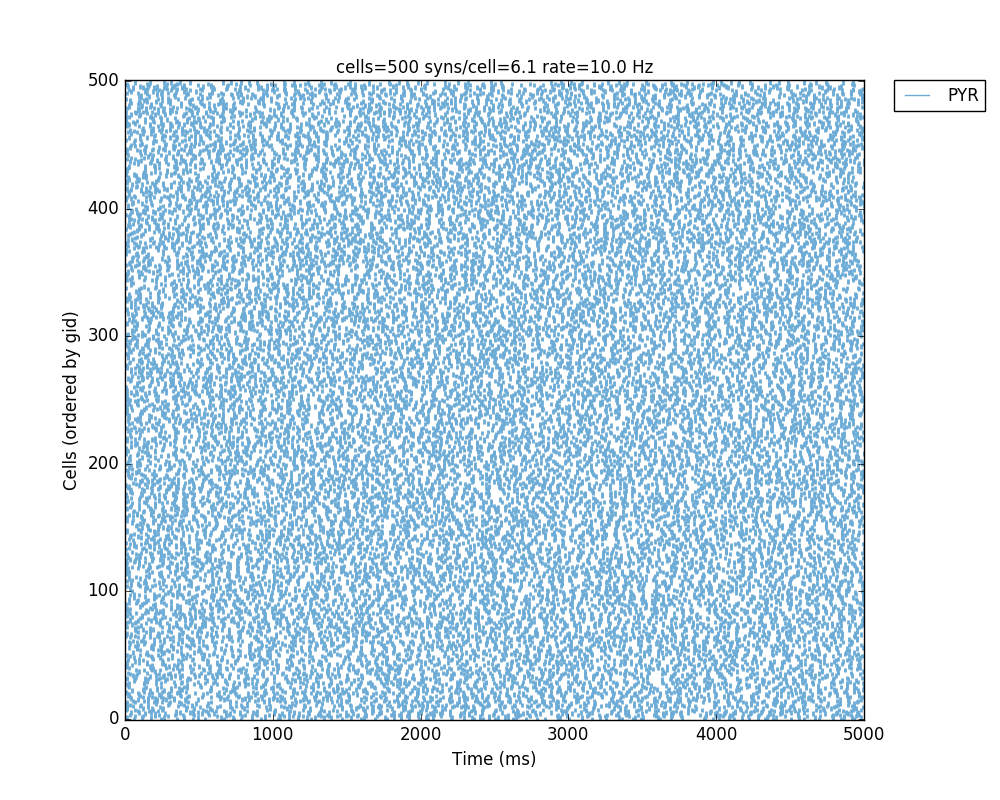

This code reproduces the simulations described in the paper "Simulation neurotechnologies for advancing brain research: Parallelizing large networks in NEURON", Lytton et al. 2016, Neural Computation. Two versions of the model are provided, one using NetPyNE and a simplified version without using NetPyNE. NetPyNE is a python package to facilitate the development, parallel simulation and analysis of biological neuronal networks using the NEURON simulator. More information: www.neurosimlab.org/netpyne * NetPyNE version: Three different networks are included: using only Hodgkin-Huxley cells (HHNet.py), Izhikevich cells (IzhiNet.py), and a hybrid one with both cell models (HybridNet.py). Note that for the Izhikevich net you will need to compile the mod file via: nrniv izhi2007b.mod. To test the simulation choose which parameter file to use in init.py and run the file: - single processor: python -i init.py which should produce this image like figure 2 in the paper:  - in parallel: mpiexec -n 4 nrniv -mpi -python init.py * Simplified version without NetPyNE: This version only generates the network of Hodgkin-Huxley type cells. To run the simulation, execute the file simplenet.py: - single processor: python simplenet.py - in parallel: mpiexec -n 4 nrniv -mpi -python simplenet.py For questions/comments email: Salvador Dura-Bernal (salvadordura at gmail.com) or Bill Lytton (billl at neurosim.downstate.edu)